Product Design / SaaS / Web3
Copper
Institutional custody, prime services, and collateral management tools for digital asset operations.
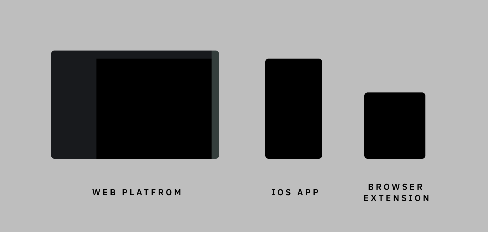
I helped maintain many of the features of the old platform and also helped the team migrate to the new platform , creating a completely new design for the settings panel and various trading features.
Designed the new iOS app and iOS design system from scratch to help make it easier for users to use our platform in a variety of scenarios.
Designed a new browser wallet app to help users manage and link to the Defi eco system.
I also created ICON for all platforms and a ICON Guideline .
Some work is confidential at the moment
Fintech Platform Design
A side-by-side comparison of the legacy Copper platform and the redesigned dark interface. Drag the handle to see how the product evolved toward a clearer, denser, and more operational fintech workspace.
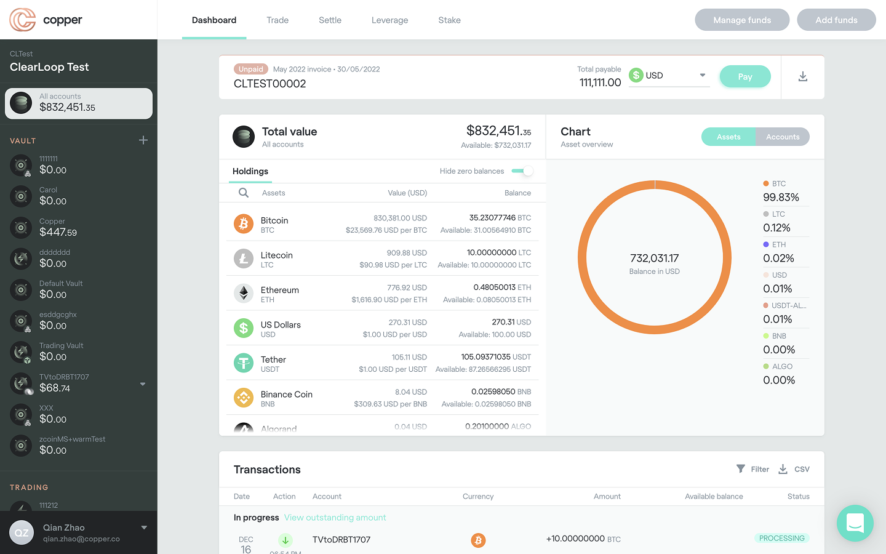
New LegacyiOS App
The iOS app was designed to give institutional clients secure, on-the-go control of their Copper accounts. The experience translates custody, portfolio monitoring, withdrawal signing, transfer approval, settlement review, ClearLoop status, and real-time notifications into focused mobile flows. From a design perspective, the challenge was to keep high-trust financial actions clear and auditable while making dense account data, approval states, and security controls feel calm, readable, and fast to act on.

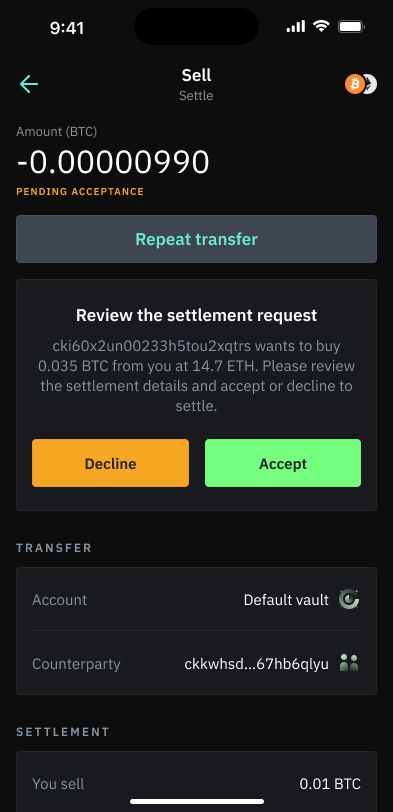
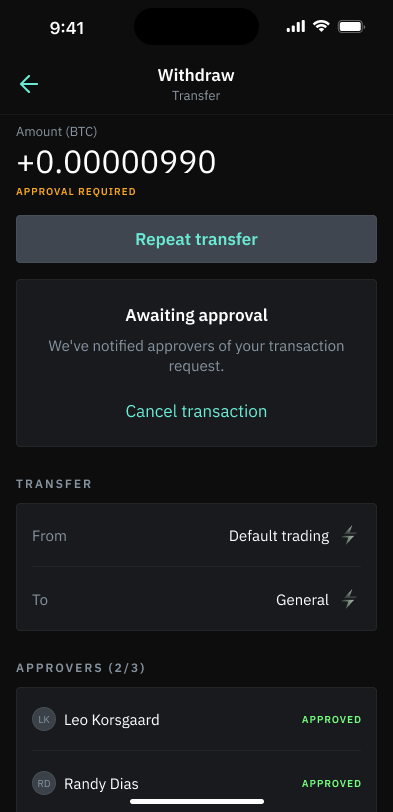
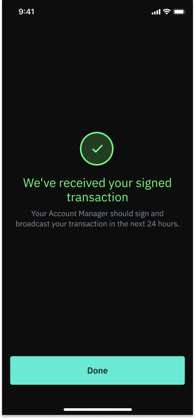
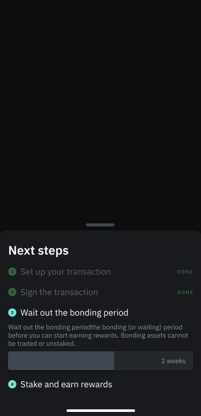
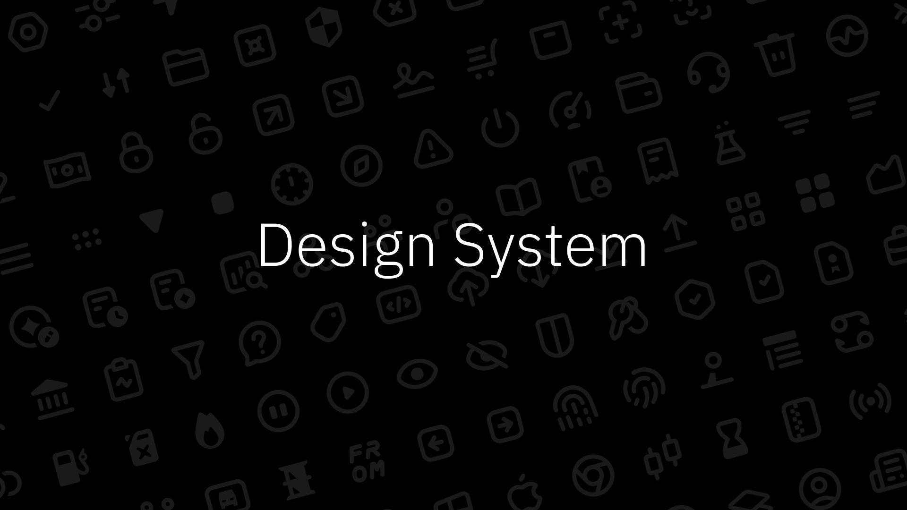
Building a scalable design system for institutional digital assets
At Copper, I worked on a design system for a cryptocurrency custody company whose platforms help institutions manage digital assets. When I joined, the product had grown quickly, but the design foundation had not kept the same pace. There was an incomplete web design system, several different versions in development, and no unified mobile library. I helped create a new design system and built the mobile version from scratch.
The problem was not only visual inconsistency. Similar controls were solved in multiple ways, some components had accessibility issues, and repeated implementation work made the product harder to maintain. This also made communication between design and engineering more difficult, because teams were often discussing one-off screens instead of shared patterns.
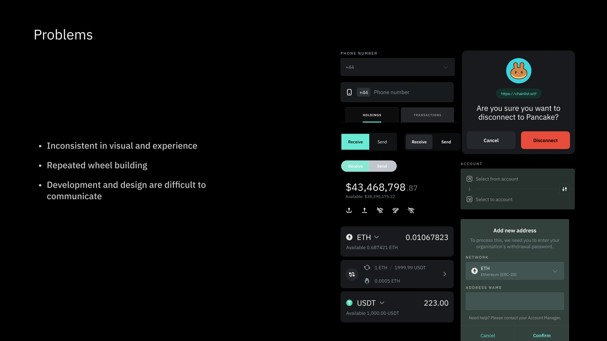
System structure
The design system followed atomic design principles: atoms, molecules, organisms, templates, and pages. This structure gave the system room to scale from foundational styles to complete product surfaces, while keeping visual language and interaction behavior consistent across web and iOS.
At the foundation, design tokens were used to manage core styles such as typography, color, spacing, and shared semantic values. Instead of redefining colors or type styles screen by screen, teams could reuse labelled tokens across the company. Shared elements such as icons could also be reused across iOS and web, helping preserve product semantics across platforms.
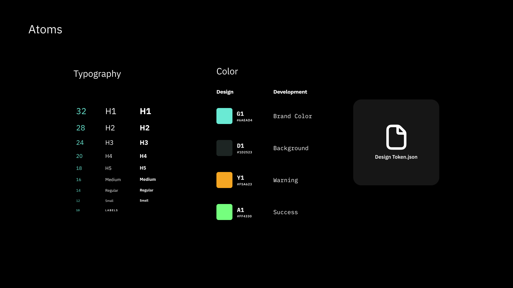
By combining atoms into molecules and organisms, teams could quickly build templates and pages. This was especially important for B2B products, where screens often include complex states, permissions, data density, and operational workflows. A reusable system allowed those states to be updated consistently when patterns changed.
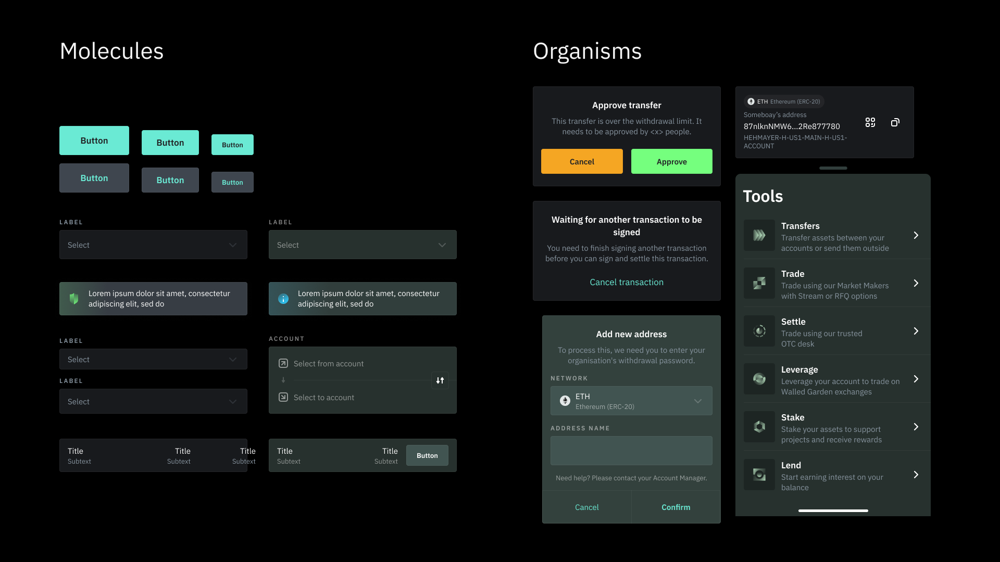
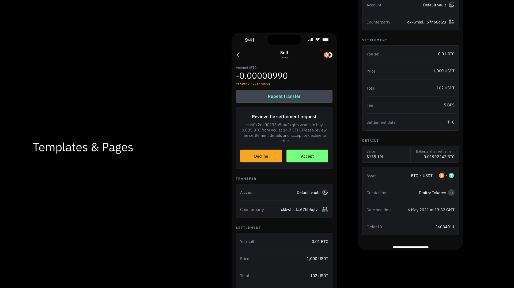
Guidelines and documentation
A key part of the work was not just designing components, but documenting how they should be used. I created guidelines for different component categories so designers could understand when and how to use each pattern, and how to contribute new components back into the system for other designers to reuse.
The same guidelines helped engineers understand interaction details, visual rules, and implementation expectations. Where useful, component documentation linked directly to development libraries, so implementation references were connected to the design source instead of living in separate conversations.
After the first phase of the design system was completed, we used the system itself to build a design system website. The site collected component specifications, usage rules, and front-end documentation in one place. Design files also linked relevant components and properties back to the website, so engineers could see which system components to use and how to configure them.
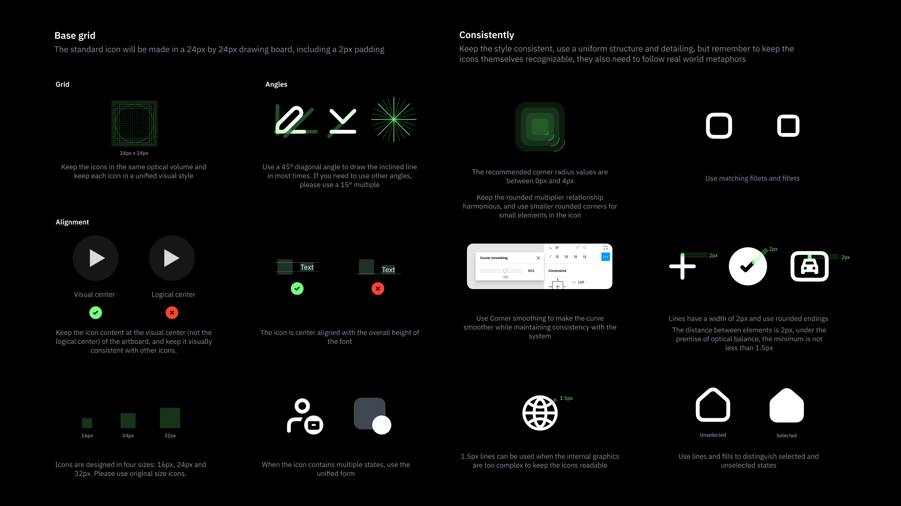
A shared workflow between design and engineering
The design system became a bridge between design and development. Instead of design specifications being a black box for engineers, and engineering implementation being a black box for designers, both teams could reference the same source of truth. Designers gained a clearer understanding of engineering constraints, while engineers could better understand design intent and component behavior.
We also established a regular design system workflow. Design system meetings were used to discuss changes, common components from product work were marked and moved into the component library, and the final versions appeared on the design system website. User needs were informed by customer interviews, usability feedback, and product analytics such as Mixpanel. I also tried to align with engineering structures and naming conventions, including approaches such as BEM, so the system could be easier to translate into code.
When the system worked well, product teams could assemble prototypes and ideas more quickly, communication costs were reduced, and the overall development process became more standardized. For a complex institutional product, the design system improved not only consistency, but also speed, quality, and collaboration.
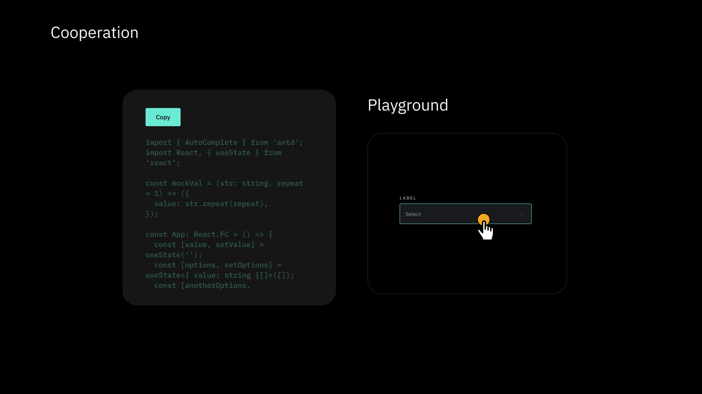
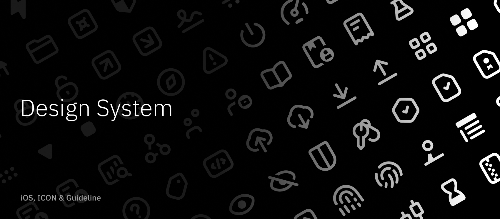
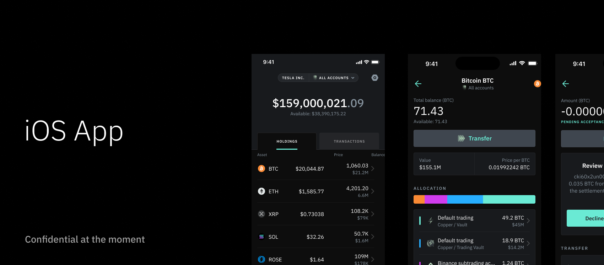
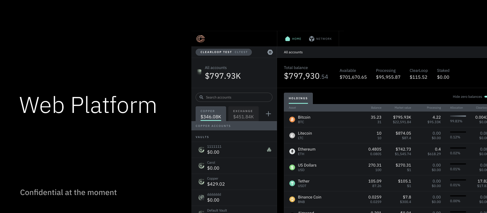
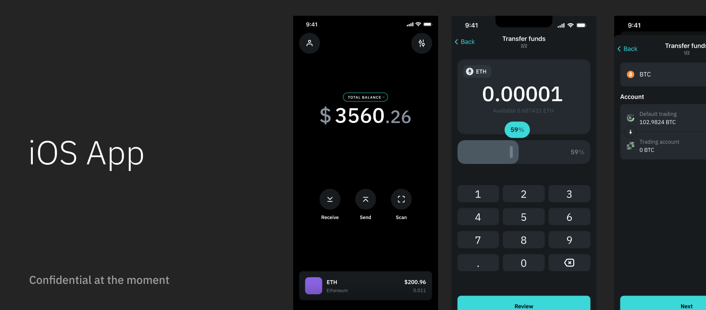
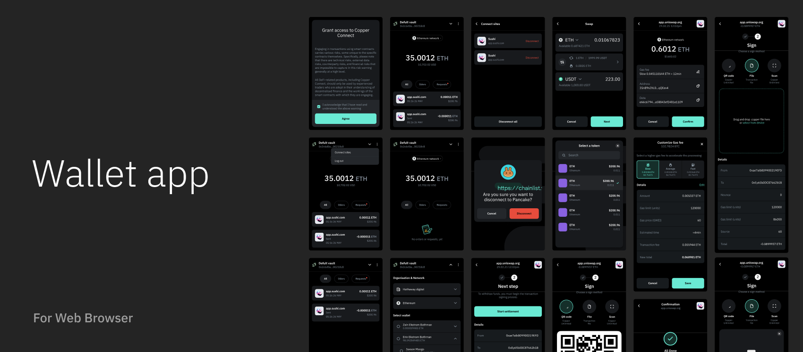